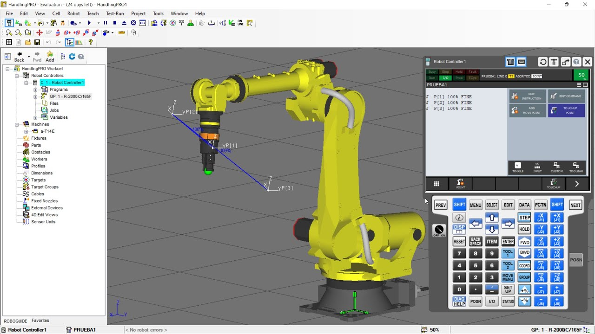

Curso de Robot FANUC Básico
Morfologia del robot
Tipos de respaldo en robot Fanuc
Masterización y Calibración
Sistemas y coordenadas
TCP y Frames
Tipos de puntos
Instrucciones principales
Protocolos de comunicación
Creacion de programas
Práctica con software roboguide